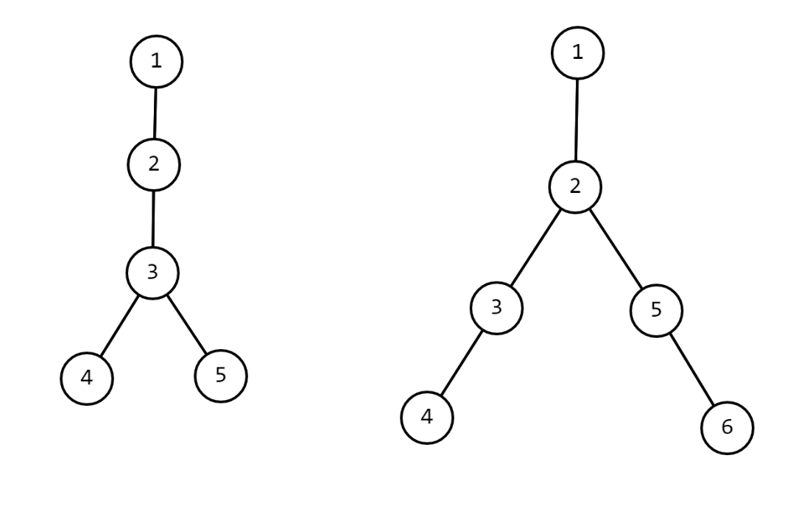

我们有时需要判断一些树是否同构。这时，选择恰当的哈希方式来将树映射成一个便于储存的哈希值（一般是 32 位或 64 位整数）是一个优秀的方案。
树哈希有很多种哈希方式，下面将选出几种较为常用的方式来加以介绍。
Method I
Formula
$$ f{now}=size{now} \times \sum f{son{now,i}}\times seed^{i-1}
$$
Notes
其中 $f_x$ 为以节点 $x$ 为根的子树对应的哈希值。特殊地，我们令叶子节点的哈希值为 $1$ 。
$size_{x}$ 表示以节点 $x$ 为根的子树大小。
$son_{x,i}$ 表示 $x$ 所有子节点以 $f$ 作为关键字排序后排名第 $i$ 的儿子。
$seed$ 为选定的一个合适的种子（最好是质数，对字符串 hash 有了解的人一定不陌生）
上述哈希过程中，可以适当取模避免溢出或加快运行速度。
Hack

上图中，可以计算出两棵树的哈希值均为 $60(1+seed)$ 。
Method II
Formula
$$ f{now}=\bigoplus f{son{now,i}}\times seed+size{son_{now,i}}
$$
Notes
其中 $f_x$ 为以节点 $x$ 为根的子树对应的哈希值。特殊地，我们令叶子节点的哈希值为 $1$ 。
$size_{x}$ 表示以节点 $x$ 为根的子树大小。
$son_{x,i}$ 表示 $x$ 所有子节点之一（不用排序）。
$seed$ 为选定的一个合适的质数。
$\large\bigoplus$ 表示异或和。
Hack
由于异或的性质，如果一个节点下有多棵本质相同的子树，这种哈希值将无法分辨该种子树出现 $1,3,5,\dots$ 次的情况。
Method III
Formula
$$ f{now}=1+\sum f{son{now,i}} \times prime(size{son_{now,i}})
$$
Notes
其中 $f_x$ 为以节点 $x$ 为根的子树对应的哈希值。
$size_{x}$ 表示以节点 $x$ 为根的子树大小。
$son_{x,i}$ 表示 $x$ 所有子节点之一（不用排序）。
$prime(i)$ 表示第 $i$ 个质数。
Example
Problem 「BJOI2015」树的同构
我们用上述方式任选其一进行哈希，注意到我们求得的是子树的 hash 值，也就是说只有当根一样时同构的两棵子树 hash 值才相同。由于数据范围较小，我们可以暴力求出以每个点为根时的哈希值，也可以通过 up and down 树形 dp 的方式，遍历树两遍求出以每个点为根时的哈希值，排序后比较。
如果数据范围较大，我们可以通过找重心的方式来优化复杂度。（一棵树的重心最多只有两个，分别比较即可）
Code
Method I
??? "例题参考代码"
```cpp
#include <algorithm>
#include <cstdio>
using i64 = long long;
using u64 = unsigned long long;
constexpr int maxT = 50;
constexpr int maxn = 50;
constexpr int SEED = 98243;
constexpr int inf = 2147483647;
inline int io() {
static int _;
return scanf("%d", &_), _;
}
template <class _Tp>
inline _Tp Max(const _Tp x, const _Tp y) {
return x > y ? x : y;
}
template <class _Tp>
inline void chkMax(_Tp &x, const _Tp y) {
(x < y) && (x = y);
}
template <class _Tp>
inline void chkMin(_Tp &x, const _Tp y) {
(x > y) && (x = y);
}
template <class _Tp>
inline void swap(_Tp &x, _Tp &y) {
_Tp z = x;
x = y;
y = z;
}
struct Edge {
int v;
Edge *las;
inline Edge *init(const int to, Edge *const ls) {
return v = to, las = ls, this;
}
} * las[maxn + 1], pool[maxn << 1], *alc = pool - 1;
inline void lnk(const int u, const int v) {
if (u == 0) return;
las[u] = (++alc)->init(v, las[u]);
las[v] = (++alc)->init(u, las[v]);
}
u64 hval[maxn + 1];
void calc(const int u, const int fa) {
static u64 lis[maxn + 1];
static int sz[maxn + 1];
/* DFS 时计算 size */
sz[u] = 1;
for (Edge *o = las[u]; o; o = o->las)
if (o->v != fa) calc(o->v, u), sz[u] += sz[o->v];
/* 将 u 各个儿子的哈希值排序 */
int cnt = 0;
for (Edge *o = las[u]; o; o = o->las)
if (o->v != fa) lis[++cnt] = hval[o->v];
std::sort(lis + 1, lis + cnt + 1);
/* 计算 u 的哈希值 */
u64 val = 0;
for (int i = 1; i <= cnt; ++i) val = val * SEED + lis[i];
hval[u] = val ? val * sz[u] : 1;
}
int sz[maxn + 1], mxsz[maxn + 1];
void precalc(const int u, const int fa) {
/* 找树的重心 */
sz[u] = 1;
mxsz[u] = 0;
for (Edge *o = las[u]; o; o = o->las)
if (o->v != fa) {
precalc(o->v, u);
sz[u] += sz[o->v];
chkMax(mxsz[u], sz[o->v]);
}
}
int main() {
static int n[maxT + 1];
static u64 val[maxT + 1][2];
const int T = io();
for (int i = 1; i <= T; ++i) {
n[i] = io();
for (int u = 1; u <= n[i]; ++u) lnk(io(), u);
precalc(1, 0);
int rtsz = inf, cnt = 0;
for (int u = 1; u <= n[i]; ++u) chkMin(rtsz, Max(mxsz[u], n[i] - sz[u]));
for (int u = 1; u <= n[i]; ++u)
if (rtsz == Max(mxsz[u], n[i] - sz[u]))
calc(u, 0), val[i][cnt++] = hval[u];
/* 如果这个点是重心就计算其哈希值 */
if (cnt == 2 && val[i][0] > val[i][1]) swap(val[i][0], val[i][1]);
/* 清空数组 */
for (int u = 1; u <= n[i]; ++u) las[u] = nullptr;
alc = pool - 1;
}
for (int i = 1; i <= T; ++i) {
bool flag = true;
for (int j = 1; j != i; ++j)
if (n[i] == n[j] && val[i][0] == val[j][0] && val[i][1] == val[j][1]) {
/* 若树 j 与树 i 点数相同且重心哈希值相同，则其同构 */
flag = false;
printf("%d\n", j);
break;
}
if (flag) printf("%d\n", i);
}
return 0;
}
```
Method II
??? "例题参考代码"
```cpp
#include <algorithm>
#include <cstdio>
#include <tr1/unordered_map>
#include <vector>
class Solution {
private:
typedef unsigned long long ull;
typedef std::vector<int>::iterator it;
static const ull seed = 2333233233;
static const int maxn = 107;
int n, m, size[maxn], lastRoot, root, lastMax, Max, ans;
ull hashval[maxn], res;
std::vector<int> e[maxn];
std::tr1::unordered_map<ull, int> id;
ull getHash(int now, int fa) {
size[now] = 1;
hashval[now] = 1;
for (register it i = e[now].begin(); i != e[now].end(); ++i) {
int v = *i;
if (v == fa) {
continue;
}
hashval[now] ^= getHash(v, now) * seed + size[v];
size[now] += size[v];
}
return hashval[now];
}
void getRoot(int now, int fa) {
int max = 0;
size[now] = 1;
for (register it i = e[now].begin(); i != e[now].end(); ++i) {
int v = *i;
if (v == fa) {
continue;
}
getRoot(v, now);
size[now] += size[v];
max = std::max(max, size[v]);
}
max = std::max(max, n - size[now]);
if (max < Max && now != lastRoot) {
root = now;
Max = max;
}
}
public:
Solution() {
get();
solve();
}
void get() {
scanf("%d", &m);
for (register int i = 1; i <= m; i++) {
scanf("%d", &n);
for (register int j = 1; j <= n; j++) {
std::vector<int>().swap(e[j]);
}
for (register int j = 1, fa; j <= n; j++) {
scanf("%d", &fa);
if (!fa) {
root = j;
} else {
e[fa].push_back(j);
e[j].push_back(fa);
}
}
lastRoot = root = 0;
Max = n;
getRoot(1, 0);
lastRoot = root, lastMax = Max;
res = getHash(root, 0);
if (!id.count(res)) {
id[res] = i;
}
ans = id[res];
Max = n;
getRoot(1, 0);
if (lastMax == Max) {
res = getHash(root, 0);
if (!id.count(res)) {
id[res] = i;
}
ans = std::min(ans, id[res]);
}
printf("%d\n", ans);
}
}
void solve() {}
};
Solution sol;
int main() {}
```
Problem HDu 6647
题目要求的是遍历一棵无根树产生的本质不同括号序列方案数。
首先，注意到一个结论，对于两棵有根树，如果他们不同构，一定不会生成相同的括号序列。我们先考虑遍历有根树能够产生的本质不同括号序列方案数，假设我们当前考虑的子树根节点为 $u$ ，记 $f(u)$ 表示这棵子树的方案数， $son(u)$ 表示 $u$ 的儿子节点集合，从 $u$ 开始往下遍历，顺序可以随意选择，产生 $|son(u)|!$ 种排列，遍历每个儿子节点 $v$ ， $v$ 的子树内有 $f(v)$ 种方案，因此有 $f(u)=|son(u)|! \cdot \prod_{v\in son(u)} f(v)$ 。但是，同构的子树之间会产生重复， $f(u)$ 需要除掉每种本质不同子树出现次数阶乘的乘积，类似于多重集合的排列。
通过上述树形 dp，可以求出根节点的方案数，再通过 up and down 树形 dp，将父亲节点的哈希值和方案信息转移给儿子，可以求出以每个节点为根时的哈希值和方案数，每种不同的子树只需要计数一次即可。
注意，本题数据较强，树哈希很容易发生冲突。这里提供一个比较简单的解决方法，求出一个节点子树的哈希值后，可以将其前后分别插入一个值再计算一遍哈希值。
Code
??? "例题参考代码"
```cpp
#include <algorithm>
#include <cmath>
#include <cstdio>
#include <cstring>
#include <iostream>
#include <map>
#include <set>
#include <utility>
#include <vector>
using namespace std;
typedef long long ll;
typedef unsigned long long ull;
typedef pair<int, int> PII;
const int mod = 998244353;
const int inf = 1 << 30;
const int maxn = 100000 + 5;
namespace sieve {
const int maxp = 2000000 + 5;
int vis[maxp], prime[maxp], tot;
void init() {
ms(vis, 0);
for (int i = 2; i < maxp; i++) {
if (!vis[i]) prime[++tot] = i;
for (int j = 1; j <= tot && prime[j] * i < maxp; j++) {
vis[i * prime[j]] = 1;
if (i % prime[j] == 0) break;
}
}
}
} // namespace sieve
namespace MyIO {
struct fastIO {
char s[100000];
int it, len;
fastIO() { it = len = 0; }
inline char get() {
if (it < len) return s[it++];
it = 0;
len = fread(s, 1, 100000, stdin);
if (len == 0)
return EOF;
else
return s[it++];
}
bool notend() {
char c = get();
while (c == ' ' || c == '\n') c = get();
if (it > 0) it--;
return c != EOF;
}
} buff;
inline int gi() {
int r = 0;
bool ng = 0;
char c = buff.get();
while (c != '-' && (c < '0' || c > '9')) c = buff.get();
if (c == '-') ng = 1, c = buff.get();
while (c >= '0' && c <= '9') r = r * 10 + c - '0', c = buff.get();
return ng ? -r : r;
}
} // namespace MyIO
namespace {
inline int add(int x, int y) {
x += y;
return x >= mod ? x -= mod : x;
}
inline int sub(int x, int y) {
x -= y;
return x < 0 ? x += mod : x;
}
inline int mul(int x, int y) { return 1ll * x * y % mod; }
inline int qpow(int x, ll n) {
int r = 1;
while (n > 0) {
if (n & 1) r = 1ll * r * x % mod;
n >>= 1;
x = 1ll * x * x % mod;
}
return r;
}
inline int inv(int x) { return qpow(x, mod - 2); }
} // namespace
using MyIO::gi;
using sieve::prime;
int ping[maxn], pingv[maxn];
int n, ans, siz[maxn];
vector<int> edge[maxn];
map<ull, int> uqc[maxn];
map<ull, int>::iterator it;
ull hashval[maxn], hashrt[maxn];
ull srchashval[maxn], srchashrt[maxn];
int dp[maxn], rdp[maxn];
ull pack(ull val, int sz) { return 2ull + 3ull * val + 7ull * prime[sz + 1]; }
void predfs(int u, int ff) {
siz[u] = dp[u] = 1;
hashval[u] = 1;
int sz = 0;
for (int v : edge[u]) {
if (v == ff) continue;
predfs(v, u);
sz++;
siz[u] += siz[v];
dp[u] = mul(dp[u], dp[v]);
uqc[u][hashval[v]]++;
hashval[u] += hashval[v] * prime[siz[v]];
}
srchashval[u] = hashval[u];
hashval[u] = pack(hashval[u], siz[u]);
dp[u] = mul(dp[u], ping[sz]);
for (it = uqc[u].begin(); it != uqc[u].end(); it++) {
dp[u] = mul(dp[u], pingv[it->second]);
}
}
set<ull> qc;
void dfs(int u, int ff) {
if (!qc.count(hashrt[u])) {
qc.insert(hashrt[u]);
ans = add(ans, rdp[u]);
}
for (int v : edge[u]) {
if (v == ff) continue;
ull tmp = srchashrt[u] - hashval[v] * prime[siz[v]];
tmp = pack(tmp, n - siz[v]);
uqc[v][tmp]++;
srchashrt[v] = srchashval[v] + tmp * prime[n - siz[v]];
hashrt[v] = pack(srchashrt[v], n);
int tdp = mul(rdp[u], inv(dp[v]));
tdp = mul(tdp, inv((int)edge[u].size()));
tdp = mul(tdp, uqc[u][hashval[v]]);
rdp[v] = mul(dp[v], tdp);
rdp[v] = mul(rdp[v], (int)edge[v].size());
rdp[v] = mul(rdp[v], inv(uqc[v][tmp]));
dfs(v, u);
}
}
int main() {
sieve::init();
ping[0] = pingv[0] = 1;
for (int i = 1; i < maxn; i++) {
ping[i] = mul(ping[i - 1], i);
pingv[i] = mul(pingv[i - 1], inv(i));
}
int T = gi();
while (T--) {
n = gi();
for (int i = 2, u, v; i <= n; i++) {
u = gi();
v = gi();
edge[u].push_back(v);
edge[v].push_back(u);
}
predfs(1, 0);
ans = 0;
qc.clear();
rdp[1] = dp[1];
hashrt[1] = hashval[1];
srchashrt[1] = srchashval[1];
dfs(1, 0);
printf("%d\n", ans);
for (int i = 1; i <= n; i++) {
edge[i].clear();
uqc[i].clear();
}
}
return 0;
}
```
At Last
事实上，树哈希是可以很灵活的，可以有各种各样奇怪的姿势来进行 hash，只需保证充分性与必要性，选手完全可以设计出与上述方式不同的 hash 方式。
参考资料
方法三参考自博客 树 hash 。